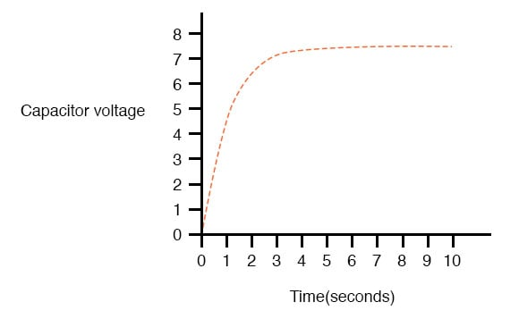
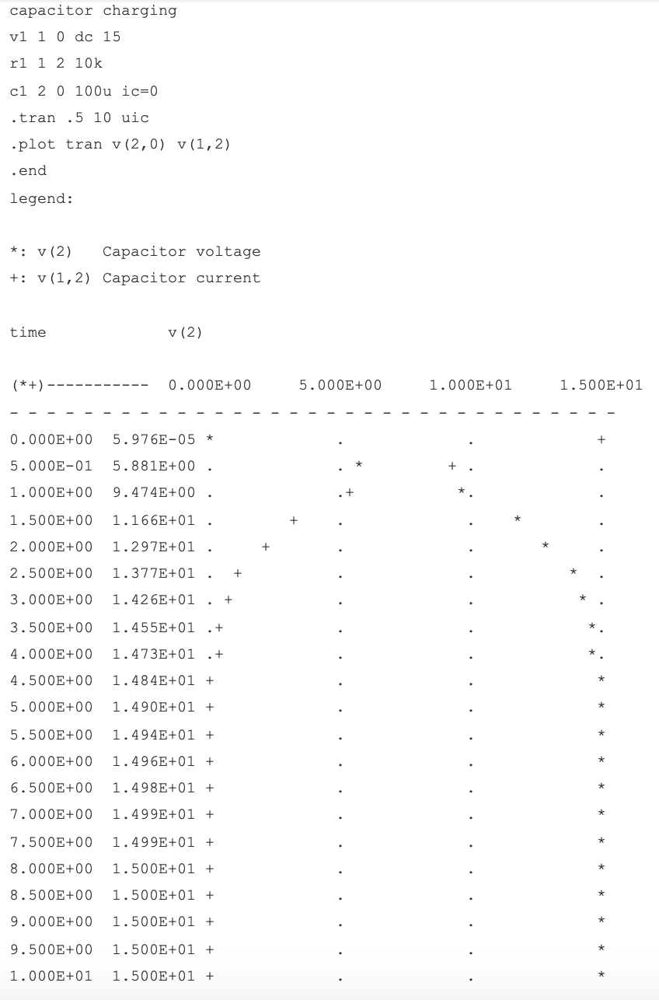

Capacitor Transient Response
Because capacitors store energy in the form of an electric field, they tend to act like small secondary-cell batteries, being able to store and release electrical energy. A fully discharged capacitor maintains zero volts across its terminals, and a charged capacitor maintains a steady quantity of voltage across its terminals, just like a battery.
When capacitors are placed in a circuit with other sources of voltage, they will absorb energy from those sources, just as a secondary-cell battery will become charged as a result of being connected to a generator. A fully discharged capacitor, having a terminal voltage of zero, will initially act as a short-circuit when attached to a source of voltage, drawing maximum current as it begins to build a charge.
Over time, the capacitor’s terminal voltage rises to meet the applied voltage from the source, and the current through the capacitor decreases correspondingly. Once the capacitor has reached the full voltage of the source, it will stop drawing current from it, and behave essentially as an open-circuit.

When the switch is first closed, the voltage across the capacitor (which we were told was fully discharged) is zero volts; thus, it first behaves as though it were a short-circuit. Over time, the capacitor voltage will rise to equal battery voltage, ending in a condition where the capacitor behaves as an open-circuit.
Current through the circuit is determined by the difference in voltage between the battery and the capacitor, divided by the resistance of 10 kΩ. As the capacitor voltage approaches the battery voltage, the current approaches zero. Once the capacitor voltage has reached 15 volts, the current will be exactly zero. Let’s see how this works using real values:

| Time (seconds) | Battery Voltage | Capacitor Voltage | Current |
|---|---|---|---|
| 0 | 15 V | 0 V | 1500 uA |
| 0.5 | 15 V | 5.902 V | 909.8 uA |
| 1 | 15 V | 9.482 V | 551.8 uA |
| 2 | 15 V | 12.970 V | 203.0 uA |
| 3 | 15 V | 14.253 V | 74.68 uA |
| 4 | 15 V | 14.725 V | 27.47 uA |
| 5 | 15 V | 14.899 V | 10.11 uA |
| 6 | 15 V | 14.963 V | 3.718 uA |
| 10 | 15 V | 14.999 V | 0.068 uA |
The capacitor voltage’s approach to 15 volts and the current’s approach to zero over time is what a mathematician would describe as asymptotic: that is, they both approach their final values, getting closer and closer over time, but never exactly reach their destinations. For all practical purposes, though, we can say that the capacitor voltage will eventually reach 15 volts and that the current will eventually equal zero.
Using the SPICE circuit analysis program, we can chart this asymptotic buildup of capacitor voltage and decay of capacitor current in a more graphical form (capacitor current is plotted in terms of voltage drop across the resistor, using the resistor as a shunt to measure current):

As you can see, I have used the .plot command in the netlist instead of the more familiar .printcommand. This generates a pseudo-graphic plot of figures on the computer screen using text characters. SPICE plots graphs in such a way that time is on the vertical axis (going down) and amplitude (voltage/current) is plotted on the horizontal (right=more; left=less).
Notice how the voltage increases (to the right of the plot) very quickly at first, then tapering off as time goes on. Current also changes very quickly at first then levels off as time goes on, but it is approaching minimum (left of scale) while voltage approaches maximum.
REVIEW:
- Capacitors act somewhat like secondary-cell batteries when faced with a sudden change in applied voltage: they initially react by producing a high current which tapers off over time.
- A fully discharged capacitor initially acts as a short circuit (current with no voltage drop) when faced with the sudden application of voltage. After charging fully to that level of voltage, it acts as an open circuit (voltage drop with no current).
- In a resistor-capacitor charging circuit, capacitor voltage goes from nothing to full source voltage while current goes from maximum to zero, both variables changing most rapidly at first, approaching their final values slower and slower as time goes on.